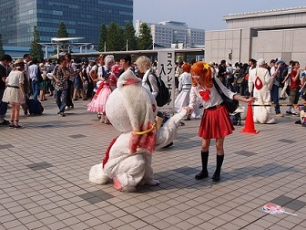

Welcome to the Comic Market!
Natsukomi 2014 Edition
Comiket 86

Comiket is a grassroots, DIY effort for selling doujinshi, self-published Japanese works. This event is held twice a year, once in August, and once in December at the Tokyo Big Sight convention center near Ariake, in Tokyo,Japan.
For those of us who have been following the Doujin scene for some time, Comiket is probably the most important event in the calendar. It's a place where like minded fans and creators gather to show what they've been working on. Think of it as the Japanese indie scene's E3 or Tokyo Game Show.
Featuring
Anime and Manga
Visual Novels
Cosplay
Doujinshi